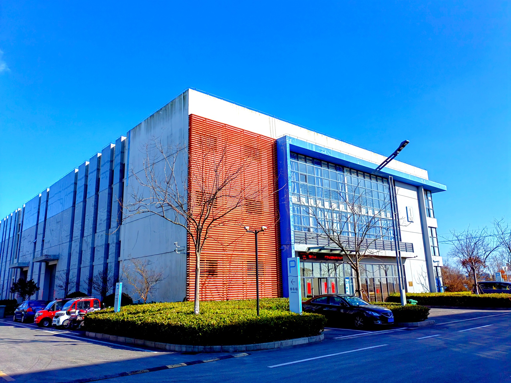

Engineering ceramics for high-temperature industry为高温行业而生的陶瓷材料
Building China's highland for industrial ceramic manufacturing.打造中国工业陶瓷制造的高地。
High-temperature materials, made in Suzhou & Nantong高温材料，苏州 · 南通智造
Suzhou Dexin Advanced Ceramics Co., Ltd. — a director member of the China Jiangsu Foundry Association — specialises in the production of ceramic refractory materials. Our products include ceramic foam filters and ceramic insulation materials. The company runs two advanced foam-ceramic production lines with an annual foam-filter output of about 2,000 m³.苏州德鑫陶瓷新材料有限公司作为中国江苏省铸造协会理事单位，是一家专业从事陶瓷耐火材料生产的企业。产品包括各类陶瓷过滤片、陶瓷隔热材料等。公司拥有 2 条先进的泡沫陶瓷生产线，年产泡沫陶瓷过滤器约 2000m³。
Founded in 2005, Dexin has built long-term, stable partnerships with dozens of internationally renowned foundries, supporting them with products, technical service and information. We have adopted and rigorously implemented an ISO-standard management system to ensure consistent quality and continuous improvement.公司成立于 2005 年，多年来与数十家国际知名铸造企业建立了长期稳定的合作关系，为客户提供产品、技术支持与信息服务。公司导入并严格执行 ISO 标准管理体系，保证产品的高质量与持续改进能力。
In 2018 we established a second plant in Tongzhou Bay, Nantong — built to China's national carbon-neutrality goals with new processes and equipment for sustainable, stable development. Everything we do is guided by one tenet: quality first, thorough service, attention to detail, the pursuit of perfection.2018 年，我们在南通通州湾建立第二工厂，按照国家碳中和政策目标建设，采用新工艺与新设备，为可持续稳定发展提供保障。我们始终秉持一个宗旨：质量第一，服务到位，注重细节，精益求精。

The principles behind every product每件产品背后的准则
From forming to finished export shipment从成型到出口交付
Bringing manufacturing and quality under one roof keeps lead times short and standards consistent.制造与质量集于一体，确保交期更短、标准统一。
Certified, recognised and trusted认证 · 荣誉 · 信赖
An ISO 9001 quality system, industry recognition and a AAA credit rating backing every order.ISO 9001 质量体系、行业荣誉与 AAA 级信用评价，为每一笔订单提供保障。
Ready to source from Dexin?准备与德鑫合作？
Send your specifications and we'll respond with pricing, lead time and a sample plan — usually within one business day.发送您的规格需求，我们将回复价格、交期与样品方案——通常一个工作日内。